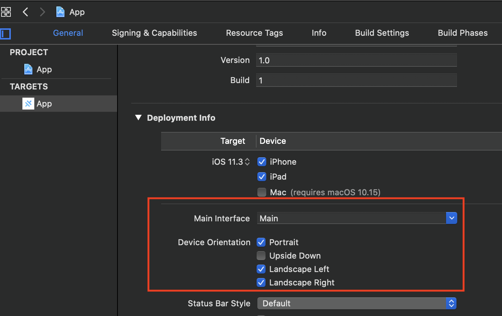

Get Started with Antourage Viewer SDK
The Antourage SDK is the easiest way to integrate your app with Antourage. Our SDK currently works with native iOS, native Android, Capacitor (Ionic), JavaScript and React Native technologies. For each technology we have prepared a complete guide with code samples.
Requirements
For a successful integration please find our requirements below and make sure that you are compatible.
- iOS 11.3+
- CocoaPods 1.10.0 or later
- Landscape orientation support
- Minimum Android SDK: Antourage widget requires a minimum API level of 21;
- Starting from 0.2.0 version library has migrated to the androidX, so make sure that you have
in your gradle.properties
android.useAndroidX=true android.enableJetifier=true
- react-native >= 0.62.2
- iOS:
- iOS 11.3+
- CocoaPods 1.10.0 or later
- Landscape orientation support
- Android:
- Minimum Android SDK: Antourage widget requires a minimum API level of 21;
- Starting from 0.2.0 version library has migrated to the androidX, so make sure that you have
in your gradle.properties
android.useAndroidX=true android.enableJetifier=true
-
iOS:
- iOS 11.3+
- CocoaPods 1.10.0 or later
- Landscape orientation support
-
Android:
-
Minimum Android SDK: Antourage widget requires a minimum API level of 21;
-
Starting from 0.2.0 version library has migrated to the androidX, so make sure that you have
in your gradle.propertiesandroid.useAndroidX=true android.enableJetifier=true -
Supported Browsers:
- Chrome - 2 last versions
- Safari - 2 last major versions
- Firefox - 2 last versions + ESR
- Edge - 16-18 and 2 last Chromium-based versions
Installation
The Antourage SDK for iOS is available as a CocoaPods pod. CocoaPods is an open source dependency manager for Swift and Objective-C Cocoa projects. If you don't already have the CocoaPods installed, see the CocoaPods Getting Started guide.
-
Create a Podfile if you don't already have one:
cd your-project-directorypod init -
Add the Antourage pod to your Podfile:
platform :ios, '11.3' pod 'Antourage' # If you want to use a beta version, also specify the repo and a version tag pod 'Antourage', :git => 'https://github.com/antourage/viewer-sdk-ios', :tag => 'v3.0.0-beta' - Install the pods:
pod install
Add:
compileOptions {
targetCompatibility 1.8
sourceCompatibility 1.8
}
dependencies {
...
implementation 'com.github.antourage:AntViewer-android:{latest_version}}'
}
Antourage SDK is installed with npm (Node Package Manager). To install the SDK go through steps below:
Step 1
npm i antourage-react-native --save
Open ios directory from terminal and install pods:
cd ios
pod install
Antourage SDK is installed with npm (Node Package Manager). To install the SDK go through steps below:
Step 1
npm i antourage-capacitor --save
npx cap sync
-
You should find app build.gradle file and add
maven { url 'https://jitpack.io' }to the repositories block. -
You should create variable
private AntourageCapacitor antouragePlugin;, addimport com.antourage.plugin.AntourageCapacitor;,add(AntourageCapacitor.class);and initialize antouragePlugin withantouragePlugin = (AntourageCapacitor) getBridge().getPlugin(AntourageCapacitor.class.getAnnotation(NativePlugin.class).name()).getInstance();in MainActivity class. Also you need to addantouragePlugin.onPause();andantouragePlugin.onResume();to overridenonPauseandonResumemethods accordingly, as you see below: -
npx cap sync
Usage
Add an Antourage config file
Please be sure that you already have the config file, otherwise please contact Antourage to request one for your application. The file contains a data for authorization (app client ids, redirect urls, etc.)
Move your Antourage-Info.plist config file into your Xcode project. If prompted, select to add the config file to all targets.
Move your antourage_info.json config file into your project's assets folder. If there's no assets folder in your project - simply create it at app/src/main/.
Place your config file antourage_info.json in your website root directory. This folder is often named public_html, htdocs, www, or wwwroot, depending on your web host and settings.
Initialization
-
Import the Antourage module in your AppDelegate:
import Antourage -
Configure an Antourage shared instance, usually in your app's application(_:didFinishLaunchingWithOptions:) method:
Antourage.configure()
You have to configure AntourageFab singleton before calling other methods.
AntourageFab.configure(yourContext)
You should to try call this method once per app lifecycle.
import { Antourage } from 'antourage-react-native';
// ...
Antourage.configure();
You should try to call this method once per app lifecycle.
import { Plugins } from '@capacitor/core';
const { Antourage } = Plugins;
Antourage.configure();
Add UI part
The main feature of Antourage SDK is a widget - a simple button that should be placed on your screen. You can set a predefined position and extra margins for it. The widget will fully work only after successful authorization.
If you need to know when the Feed screen appears and disappears you can use callbacks.
import Antourage
class ViewController: UIViewController {
var widget: Antourage! {
didSet {
view.addSubview(widget.view)
}
}
override func viewDidLoad() {
super.viewDidLoad()
widget = Antourage.shared
}
}
Add antourage widget view to the layout:
val antfab = AntourageFab(yourContext)
antfab.showFab(yourActivity)
override fun onResume() {
super.onResume()
antfab.onResume()
}
override fun onPause() {
super.onPause()
antfab.onPause()
}
import AntourageView from 'antourage-react-native';
// ...
render() {
return (
<View style={styles.container}>
<Text style={styles.welcome}>Welcome to React Native!</Text>
<Text style={styles.instructions}>To get started, edit App.js</Text>
<Text style={styles.instructions}>{instructions}</Text>
<AntourageView
onViewerAppear={() => console.log('Appeared')}
onViewerDisappear={() => console.log('Disappeared')}
widgetPosition={'bottomRight'}
widgetLocale={'en'}
widgetMargins={{ vertical: 50, horizontal: 20 }}
/>
</View>
);
}
Antourage widget works as overlay over Capacitor web view. You can show and hide it whenever you want (navigation handlers or component lifecycle etc).
import { Plugins } from '@capacitor/core';
const { Antourage } = Plugins;
Antourage.showWidget();
Antourage.hideWidget();
The following code should be added to a web-site:
<link href="https://antourage.com/widget.{version}.css" rel="stylesheet">
<script defer src="https://antourage.com/widget.{version}.js"></script>
<script defer src="https://antourage.com/widget-auth.{version}.js"></script>
<head> or <body> element.
The script will inject all other necessary elements. The actual widget operates inside of iframe.
This data will be provided before integration:
version- the version number of the application you are adding
Widget position and margins
You can set any position from the list:
- topLeft
- midLeft
-
bottomLeft
-
topMid
-
bottomMid
-
topRight
- midRight
- bottomRight
import Antourage
// ...
Antourage.shared.widgetPosition = .bottomRight
Antourage.shared.widgetMargins = WidgetMargins(vertical: 10, horizontal: 20)
// ...
// ...
antfab.setPosition(WidgetPosition.bottomRight)
antfab.setMargins(horizontal = 10, vertical = 80)
// ...
import AntourageView from 'antourage-react-native';
// ...
<AntourageView
widgetPosition={'bottomRight'}
widgetMargins={{ vertical: 50, horizontal: 20 }}
/>
// ...
import { Plugins } from '@capacitor/core';
const { Antourage } = Plugins;
Antourage.setPosition({ platform: "ios", position: "bottomLeft" }); // iOS only
Antourage.setPosition({ platform: "android", position: "bottomLeft" }); // android only
Antourage.setPosition({ position: "bottomLeft" }); // both
Antourage.setMargins({platform: "ios", horizontal: 0, vertical: 30 }); // iOS only
Antourage.setMargins({platform: "android", horizontal: 10, vertical: 50 }); // android only
Antourage.setMargins({horizontal: 0, vertical: 30 }); // both
| Property | Type | Description |
|---|---|---|
| onViewerAppear | Closure | Called when the user opens the widget controller. |
| onViewerDisappear | Closure | Called when the user dismisses the widget controller. |
| widgetPosition | Enum | You can set any widget position from enum |
| widgetMargins | Struct | You can set custom horizontal and vertical margin for each position. But some positions may ignore it. Max vertical - 220, max horizontal - 50. |
Orientation (iOS only)
Your app may support only portrait orientation, but our widget should be able to use landscape orientation while playing video.
First of all you should enable ladnscape orientation in xcode project. 
You can lock orientation for specific controllers by adding code below to them:
override var supportedInterfaceOrientations: UIInterfaceOrientationMask {
return [.portrait]
}
You can use some third-party library (react-native-orientation-locker) to be able to lock orientations occasionally depending on the content. Just add two listeners to handle widget state:
import AntourageView from 'antourage-react-native';
import Orientation from 'react-native-orientation-locker';
// ...
<AntourageView
onViewerAppear={() => Orientation.unlockAllOrientations() }
onViewerDisappear={() => Orientation.lockToPortrait() }
/>
First approach:
You can use cordova-plugin-screen-orientation to be able to lock orientations occasionally depending on the content.
Just add two listeners to handle widget state:
import { Plugins } from '@capacitor/core';
const { Antourage } = Plugins;
Antourage.addListener('onViewerAppear', (info: any) => {
console.log('viewer did appear');
// window.screen.orientation.unlock();
});
Antourage.addListener('onViewerDisappear', (info: any) => {
console.log('viewer did disappear');
//window.screen.orientation.lock('portrait');
});
You just need to call this function after your app starts:
import { Plugins } from '@capacitor/core';
const { Antourage } = Plugins;
Antourage.lockCapacitorControllerToPortrait();
Examples
To run the example project, clone the Antourage repo, open project in Android Studio and run app module.
To run the example project, clone the Antourage repo first.
Run yarn bootstrap in the root directory to install the required dependencies for each package.
While developing, you can run the example app for testing needs.
To start the packager:
yarn example start
yarn example android
yarn example ios
To run the example project, clone the Antourage repo first. And run code below from the example directory:
npm i
npx cap sync
ionic capacitor run ios --livereload --external